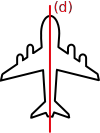
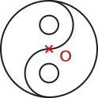

|
F2
|
- Propriétés des symétries
|
Activité Introduction
Dans chacun des cas tracé les axes de symétrie et placer le centre de symétrie si possible.

Propriétés :
Symétrie axiale :
Propriétés
Lors d'une symétrie axiale les longueurs, les alignements et les angles sont conservés.
Exemple :
Symétrie centrale :
Propriétés :
- Si trois points sont alignés, alors leurs symétriques par rapport à un point sont aussi alignés.
- Si deux segments sont symétriques par rapport à un point, alors ils sont parallèles et de même longueur.
- Si deux angles sont symétriques par rapport à un point, alors ils ont la même mesure.
- Si deux figures sont symétriques par rapport à un point, alors elles ont le même périmètre et la même aire.
Exemple :
Axe et centre de symétrie d'une figure :
Axe de symétrie :
On dit qu'une droite est un axe de symétrie d'une figure lorsque la figure et son symétrique par rapport à cette droite sont confondus.
Exemple :

Le droite (d) est un axe de symétrie de la figure.
Centre de symétrie :
On dit qu'un point est un centre de symétrie d'une figure lorsque la figure et son symétrique par rapport à ce point sont confondus.
Exemple :

Le point O est un centre de symétrie de la figure.